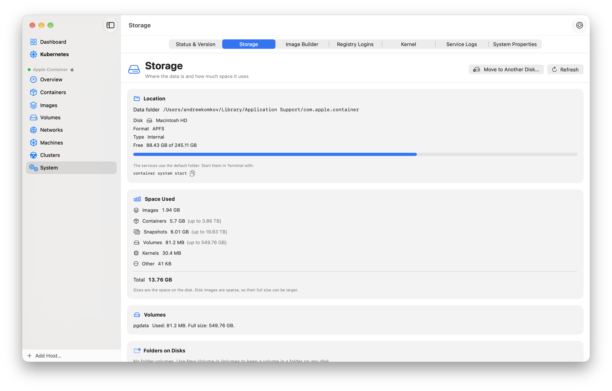

Container und Volumes auf einer externen Festplatte speichern
Images, Container und Volumes füllen eine kleine interne Festplatte schnell. Mit Apples container-Tool kannst du diese Daten auf einer externen SSD ablegen: einzelne Ordner per Bind-Mount oder das ganze Datenverzeichnis. Diese Anleitung zeigt beides und wie du die Festplatte ohne Schaden trennst.
Kurz gesagt. Formatiere die Festplatte als APFS. Für ein Projekt bindest du einen Ordner per Bind-Mount ein: -v /Volumes/Fast/pg:/data. Für alles stoppst du die Dienste, kopierst ~/Library/Application Support/com.apple.container mit cp -Rp auf die Festplatte und startest die Dienste jedes Mal mit container system start --app-root /Volumes/Fast/container.
Wo die Daten jetzt liegen
apple/container speichert alle Daten in einem Ordner, dem App-Root. Standardmäßig ist das ~/Library/Application Support/com.apple.container, mit Ordnern für Container, Image-Inhalte, Snapshots, Volumes, Kernel und Netzwerke. Prüfe den Pfad und den belegten Speicherplatz:
container system status | grep appRoot
container system dfFestplatte auswählen und formatieren
- Verwende eine SSD an USB-C oder Thunderbolt. Eine Festplatte mit Magnetscheiben funktioniert, aber Container starten langsamer.
- Formatiere sie als APFS (Mac OS Extended geht auch). Verwende nicht exFAT, FAT oder NTFS: Volumes sind dünn belegte Disk-Images, und diese Dateisysteme kennen weder Sparse-Dateien noch Unix-Berechtigungen.
- Verwende kein Netzlaufwerk für den App-Root.
- Gib der Festplatte einen kurzen Namen ohne Leerzeichen, zum Beispiel
Fast. Der Pfad ist dann/Volumes/Fast.
- Option 1: Projektdaten per Bind-Mount auf der Festplatte ablegen
Ein Bind-Mount teilt einen Ordner deines Mac mit dem Container, und der Ordner kann auf jeder Festplatte liegen. So hältst du große Daten, etwa eine Datenbank oder Modelldateien, am einfachsten von der internen Festplatte fern:
mkdir -p /Volumes/Fast/site
container run -d --name web -p 8080:80 \
-v /Volumes/Fast/site:/usr/share/nginx/html:ro nginx:alpineDie Festplatte muss angeschlossen sein, bevor der Container startet. Images und der Container selbst bleiben auf der internen Festplatte.
- Option 2: Alle apple/container-Daten auf die Festplatte verschieben
Das verschiebt Images, Container, Snapshots und Volumes. Stoppe zuerst die Dienste, damit sich während des Kopierens keine Datei ändert:
container system stop
cp -Rp ~/Library/Application\ Support/com.apple.container /Volumes/Fast/container
container system start --app-root /Volumes/Fast/container
container system status | grep appRoot
container ls -a && container image ls && container volume lsVerwende cp -Rp. In unserem Test unter macOS 27 (APFS zu APFS über USB) blieben die Volume-Images dünn belegt und die erweiterten Attribute erhalten. ditto schrieb jedes Sparse-Image in voller Größe, was die Festplatte füllen kann. Behalte den alten Ordner, bis du geprüft hast, dass deine Container, Images und Volumes aufgelistet werden.
--app-root nicht. Jedes container system start ohne das Flag verwendet wieder den internen Ordner. Gib das Flag jedes Mal an, zum Beispiel über einen Shell-Alias, und prüfe paths.appRoot in container system status.Gantry kann diesen Umzug für dich erledigen: siehe unten.
- Images auf der Festplatte archivieren
Um Speicherplatz freizugeben, ohne ein Image zu verlieren, speichere es auf der externen Festplatte und lösche es. Lade es wieder, wenn du es brauchst:
mkdir -p /Volumes/Fast/images
container image save -o /Volumes/Fast/images/myapp.tar myapp:dev
container image delete myapp:dev
container image load -i /Volumes/Fast/images/myapp.tar- Die Festplatte sicher trennen
- Stoppe die Container, die die Festplatte nutzen:
container stop <name>. - Liegt der App-Root auf der Festplatte, stoppe die Dienste:
container system stop. - Wirf die Festplatte im Finder aus und trenne sie dann.
Verschwindet die Festplatte, während Container von ihr laufen, fallen sie aus, und laufende Schreibvorgänge können verloren gehen. Starte nach dem erneuten Anschließen die Dienste mit --app-root und dann die Container.
- Externe Festplatten in Gantry
Auf einem apple/container-Host zeigt der Bereich Speicher im Abschnitt „System“, wo das Datenverzeichnis liegt, auf welcher Festplatte, und wie viel Platz Images, Container, Snapshots, Volumes und Kernel belegen. Auf andere Festplatte verschieben… stoppt die Dienste, kopiert die Daten, prüft sie, wechselt das Datenverzeichnis und startet die Dienste wieder; die alte Kopie löscht es erst nach einer eigenen Bestätigung. Gantry merkt sich das Datenverzeichnis für jeden späteren Start. Neue Volumes können in einem Ordner auf jeder Festplatte liegen, und ist diese Festplatte nicht angeschlossen, sagt dir Gantry, welche Festplatte fehlt, und startet die Container nicht, die sie brauchen.

- Docker Desktop und OrbStack
Docker Desktop verschiebt sein Disk-Image unter Settings ▸ Resources ▸ Advanced ▸ Disk image location. OrbStack hat in Version 0.13.0 eine Einstellung für den Speicherort der Daten eingeführt. Siehe den Vergleich.
Weitere Anleitungen
- Von Docker Desktop zu Apple container wechseln: Befehle, Compose, Volumes und Lücken
- Container aus einem docker run-Befehl auf dem Mac erstellen (docker run zu container run)
- Apple container GUI für Mac: kompletter apple/container-Leitfaden
- Kubernetes auf Apple container: GUI für container cluster und ein Kubernetes-Browser
- Gantry vs. Docker Desktop vs. OrbStack vs. Podman Desktop auf dem Mac (2026)
Fragen und Antworten
Kann ich Images von Apple container auf einer externen Festplatte speichern?
Ja. Starte die Dienste mit container system start --app-root /Volumes/Disk/container. Alle Images, Container, Snapshots und Volumes liegen dann in diesem Ordner.
Welches Dateisystem sollte die externe Festplatte haben?
APFS. Volumes sind dünn belegte Disk-Images, und Container brauchen Unix-Berechtigungen, die exFAT, FAT und NTFS nicht haben.
Wie kopiere ich die container-Daten, ohne die Festplatte zu füllen?
Verwende cp -Rp, das in unserem Test die dünn belegten Volume-Images klein hielt. ditto kopierte jedes Sparse-Image in voller Größe.
Was passiert, wenn ich die Festplatte trenne, während Container laufen?
Die Container, die die Festplatte nutzen, fallen aus, und noch nicht geschriebene Daten können verloren gehen. Stoppe die Container und, wenn der App-Root auf der Festplatte liegt, die Dienste, bevor du sie auswirfst.
Merkt sich die container-CLI den neuen Speicherort?
Nein. Gib --app-root bei jedem container system start an. container system status zeigt das verwendete Verzeichnis als paths.appRoot.
Zuletzt aktualisiert am 2026-11-07.